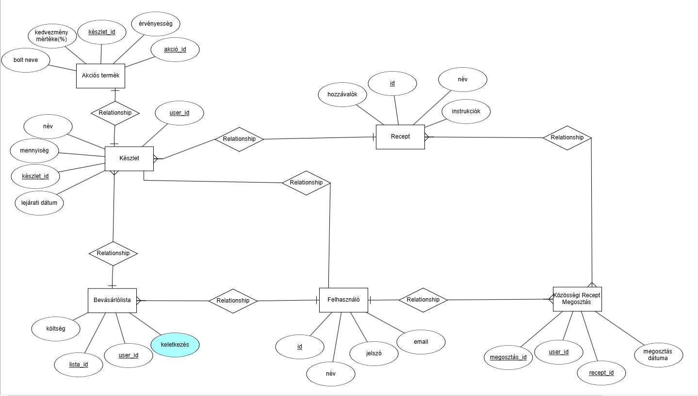
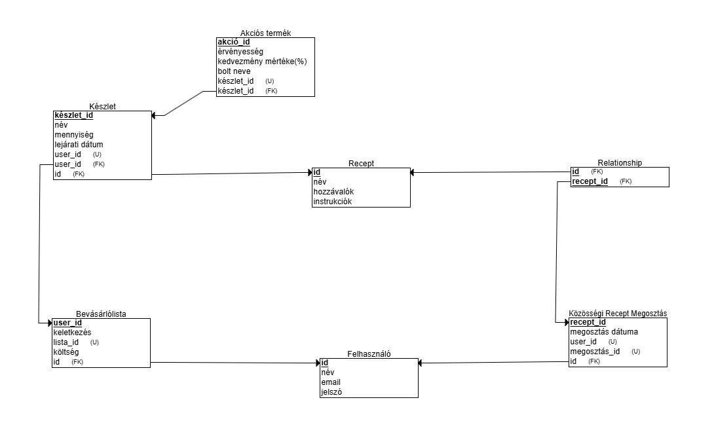

1. Bevezetés
Az SmartCart egy innovatív és intelligens bevásárlólista és készletkezelő alkalmazás, amelyet úgy terveztünk, hogy megkönnyítse a háztartásvezetést, a tudatos vásárlást és az egészségtudatos életmód kialakítását. A modern élet rohanó tempójában egyre nagyobb kihívást jelent az idő, a pénz és az energia hatékony felhasználása, ezért az SmartCart célja, hogy a mindennapi feladatokat egyszerűbbé és élvezetesebbé tegye. Az alkalmazás központi funkciója, hogy segítsen nyomon követni a háztartásban található készleteket, automatikusan frissítse azok állapotát, és emlékeztessen, ha egy fontos termék fogyóban van. Ezen kívül az SmartCart képes elemezni a rendelkezésre álló alapanyagokat, és ezek alapján recepteket ajánlani, így nemcsak időt takarít meg, hanem az élelmiszer-pazarlást is csökkenti.
A vásárlás optimalizálását az akciós termékek keresésének lehetősége támogatja, mivel az alkalmazás képes a helyi boltok ajánlatait összegyűjteni, hogy a felhasználók mindig a legjobb árakat találják meg. Az egészségtudatosság jegyében az SmartCart segít egyensúlyban tartani az étrendet tápanyagelemzéssel és fenntarthatóbb alternatívák ajánlásával. A közösségi funkciók is kiemelt szerepet kapnak, hiszen az alkalmazás lehetővé teszi a receptek megosztását, közös bevásárlólisták készítését
Az SmartCart egy átfogó megoldás, amely nemcsak időt és pénzt spórol, hanem egy fenntarthatóbb és élvezetesebb életmód kialakításához is hozzájárul. Segítségével a felhasználók stresszmentesen végezhetik háztartási teendőiket, miközben részesülhetnek a tervezett vásárlás és a közösségi összekapcsolódás nyújtotta előnyökben. Ez az alkalmazás nem csupán egy eszköz, hanem egy életmódbeli változás alapja, amely kiegyensúlyozottabbá, hatékonyabbá és élvezetesebbé teheti a mindennapokat.
Az alkalmazás intuitív és letisztult kezelőfelülete egyszerűen használható, így bárki könnyedén eligazodhat rajta, függetlenül a digitális eszközökben szerzett tapasztalatától. Az automatikus frissítések biztosítják, hogy a felhasználók mindig naprakész információk alapján hozhassanak döntéseket. Ennek köszönhetően az alkalmazás tökéletes választás mindazoknak, akik szeretnék hatékonyabban és rendszerezettebben irányítani mindennapjaikat.
3. Adatmodellek
3.1 Adatbázis kezelő kiválasztása
A SmartCart alkalmazás adatbázis-kezelőjének kiválasztásánál a PostgreSQL bizonyul a legjobb megoldásnak. Ez a nyílt forráskódú relációs adatbázis-kezelő rendszer nemcsak kiváló teljesítményt és megbízhatóságot biztosít, hanem rendkívüli rugalmasságot is kínál, amely különösen fontos egy olyan alkalmazás számára, amely a mindennapi bevásárlásokat segíti elő és hosszú távú növekedésre készül.
A PostgreSQL egyik legnagyobb előnye, hogy kiválóan skálázható, legyen szó akár vertikális skálázásról, amikor nagyobb erőforrásokat használunk, akár horizontális skálázásról, például sharding vagy replikáció révén. Ez biztosítja, hogy a SmartCart alkalmazás képes legyen hatékonyan működni egy induló projektként éppúgy, mint egy több millió felhasználót kiszolgáló rendszerként. Az adatbázis-kezelő rendkívüli adatmodellezési képességei révén tökéletesen kezeli az olyan összetett relációkat, mint például a felhasználók, bevásárlólisták, receptek, készletadatok és táplálkozási statisztikák közötti kapcsolatok. Továbbá támogatja a nem strukturált adatok, például JSON-táblák és XML-adattípusok kezelését, amelyek a modern alkalmazások rugalmasságát és sokoldalúságát biztosítják.
A PostgreSQL lekérdezés-végrehajtó motorja kiemelkedő teljesítményt nyújt még nagy adatbázisok kezelése esetén is. Az indexálás, az automatizált partícionálás és a párhuzamos lekérdezések lehetővé teszik, hogy az alkalmazás gyorsan és hatékonyan működjön, akkor is, ha az adatok mennyisége jelentősen megnő. Ezen felül a PostgreSQL mögött álló hatalmas közösség és folyamatos fejlesztés garantálja, hogy mindig a legújabb innovációk és hibajavítások érhetők el, miközben a dokumentáció és a támogatás révén gyorsan megoldhatók a fejlesztés során felmerülő problémák.
A biztonság szempontjából a PostgreSQL kiemelkedő teljesítményt nyújt, hiszen olyan beépített funkciókkal rendelkezik, mint a precíz hozzáférési szintszabályozás, az SSL-támogatás és a titkosítási lehetőségek. Ez rendkívül fontos, hiszen a SmartCart alkalmazás célja a felhasználói adatok biztonságos kezelése, különösen az érzékeny információk, mint például a vásárlási szokások vagy a felhasználói fiókok védelme.
A PostgreSQL nyílt forráskódú, ami azt jelenti, hogy nincsenek licencdíjak, így költséghatékony megoldást jelent. Ez különösen fontos egy induló alkalmazás esetében, ahol a fejlesztési és üzemeltetési költségek minimalizálása kulcsfontosságú. Emellett a licenc rugalmasságot biztosít a jövőbeli testreszabás vagy bővítés során, miközben az adatbázis-kezelő támogatja a modern technológiák, például a mikroszolgáltatások, konténerizált alkalmazások és felhőalapú rendszerek integrációját.
A PostgreSQL jobb választás a MySQL-nél, mivel fejlettebb adatkezelési funkciókkal, például triggerek és tárolt eljárások kezelésével rendelkezik, és nagy adathalmazok esetén is gyorsabb és hatékonyabb. A MongoDB-vel szemben, amely egy NoSQL-alapú adatbázis, a PostgreSQL előnye, hogy képes relációs és nem relációs adatokat egyaránt kezelni, így mindkét világ legjobbjait kínálja egy olyan alkalmazás számára, ahol az adatok közötti kapcsolatok szorosan strukturáltak. A Microsoft SQL Serverrel szemben a PostgreSQL költséghatékonysága és nyílt forráskódú jellege kiemelkedik, miközben a funkcionalitásban egyenértékű megoldásokat nyújt.
Hosszú távon a PostgreSQL ideális választás, mivel folyamatos frissítései révén mindig naprakész marad, és zökkenőmentesen integrálható a legmodernebb technológiákkal. Könnyen bővíthető üzleti intelligencia és analitikai funkciókkal, amelyek lehetővé teszik például a táplálkozási trendek elemzését vagy a vásárlói szokások előrejelzését. Ezzel az adatbázis-kezelő biztosítja, hogy a SmartCart alkalmazás stabil, megbízható és jövőálló alapokra épüljön, amely képes megfelelni a változó felhasználói igényeknek és a technológiai fejlődés kihívásainak.
3.2 Szemantikai adatmodell
A központi entitás a Felhasználó, amely kapcsolatban áll a Bevásárlólista entitással, mivel egy felhasználó több bevásárlólistát hozhat létre. Ez a kapcsolat azt jelenti, hogy minden bevásárlólista egy felhasználóhoz tartozik, és egy felhasználó számos bevásárlólistát készíthet a saját igényei szerint. A Bevásárlólista entitás a Készlet entitással is kapcsolódik, mivel egy bevásárlólista több terméket is tartalmazhat. A Készlet entitás kapcsolódik a Recept entitáshoz is, mivel egy recept több készlet tételt igényelhet. A kapcsolat M típusú, mivel egy receptben számos hozzávaló szerepelhet, és egy-egy készlet tétel több receptben is felhasználható. Ezen kívül a Készlet entitás kapcsolódik az Akciós Termék entitáshoz, amely azokat a termékeket tartalmazza, amelyek kedvezményes áron elérhetők. A Közösségi Recept Megosztás entitás tehát a Felhasználó és a Recept entitások között helyezkedik el, biztosítva, hogy a felhasználók közötti interakciók megvalósuljanak, és az alkalmazás közösségi élményt kínáljon. Mindezek mellett a Recept entitás kapcsolódik a Készlet entitáshoz, mivel a receptek összetevői az egyes készlet tételekhez tartoznak, és ezek az összetevők a felhasználó készletéből származnak. A teljes adatmodell tehát úgy van felépítve, hogy az alkalmazás különböző entitásai és azok közötti kapcsolatok jól tükrözik a valós világban lévő folyamatokat, mint például a bevásárlás, receptkészítés, közösségi interakciók és akciós termékek kezelése. A kapcsolatok és az adatstrukturák biztosítják, hogy a felhasználók könnyen navigálhassanak a rendszeren belül, és minden adat összhangban legyen az alkalmazás funkcionális céljaival.

3.3 Relációs adatmodell
Az ER diagram relációs adatmodellre történő konvertálása során az entitások táblákká, a kapcsolatok pedig idegen kulcsokkal összekapcsolt táblákra alakítódnak. Minden entitás egy-egy táblát képvisel a relációs adatmodellben, és az entitás attribútumai az oszlopokat alkotják, míg az elsődleges kulcsok biztosítják az adatok egyediségét. Az első lépés a táblák létrehozása az entitások alapján. Minden entitás, például a Felhasználó, a Bevásárlólista vagy a Készlet, táblává alakul, ahol az attribútumok az oszlopokat jelentik. Az elsődleges kulcs minden táblában meghatározásra kerül, hogy egyértelműen azonosítani lehessen az egyes rekordokat. A relációs adatmodellben meghatározott idegen kulcsok biztosítják a táblák közötti kapcsolatokat, így a különböző táblák adatainak összekapcsolása és lekérdezése lehetséges. Az integritási szabályok alkalmazása biztosítja az adatbázis helyes működését és az adatok érvényességét. Ezek a szabályok biztosítják, hogy a táblák adatai megfeleljenek a rendszer logikai követelményeinek és az adatbázis integritását fenntartsák. A relációs adatmodellben tehát minden táblát és kapcsolatot világosan meghatározunk, figyelembe véve a szükséges integritási korlátokat. Ez az adatmodell lehetővé teszi, hogy a rendszer hatékonyan és következetesen kezelje az adatokat, miközben biztosítja a táblák közötti kapcsolatok helyes kezelését.

3.4 Az adatbázis kezelővel kapcsolatot tartó osztályok